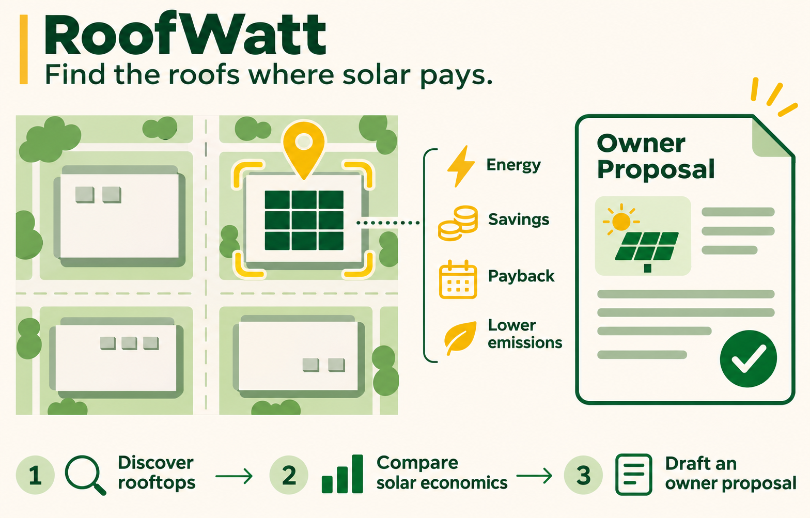
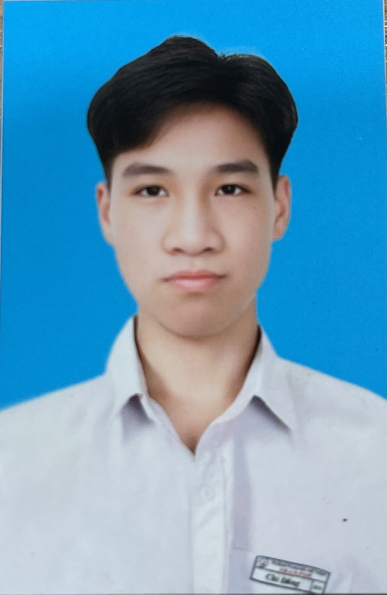

RoofWatt: AI Solar Lead Finder
~7.3 MWof solar
~$886Kannual savings
~3,400 tCO₂ avoided / yr
Top 10 of 185 buildings analyzed
LangChain deepagentsGeminiNREL PVWattsStreamlitpydeck
Dung C. Le a.k.a. Tony Le
Open to Data Analyst, Data Engineer, Data Scientist roles.
Kirksville, MO · Open to relocation

01 Highlights
03 Projects

Top 10 of 185 buildings analyzed
| Token | Light | Dark | vs paper (L / D) |
|---|